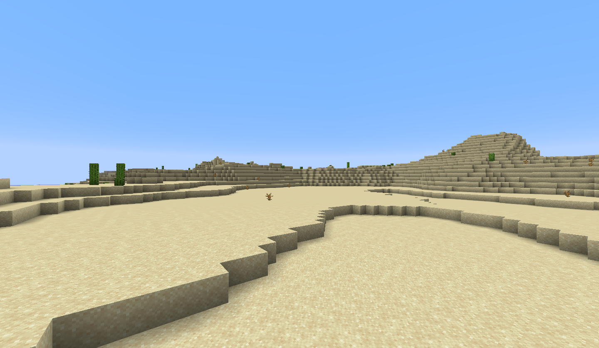

No Minecraft, os biomas são diferentes em cada regiões do mundo que possuem clima, vegetação, criaturas e paisagens próprias.
É um dos biomas mais comuns. Cheio de árvores, grama e animais como ovelhas, vacas e porcos.
Um lugar seco e quente, cheio de areia e com poucas árvores. Podemos encontrar templos e vilas.
Frio e coberto de pinheiros. Muitas vezes tem neve e animais como lobos.